Fonctionnalités avancées de Discussion
Nextcloud Discussion propose des fonctionnalités que les utilisateurs pourraient trouver utiles.
Notifications and privacy
By default, Nextcloud Talk will notify you about:
New messages in private conversations;
Replies to messages you sent;
Messages mentioning you or group/team you are member of;
Started calls in conversations you are part of.
You can change this behavior in the conversation settings. Additionally, you can configure:
Important conversations: you will be always notificed about new messages, even if you are in « Do Not Disturb » mode;
Sensitive conversations: content of messages will not be shown in the conversation list and obscured from notifications.
{kind=link}
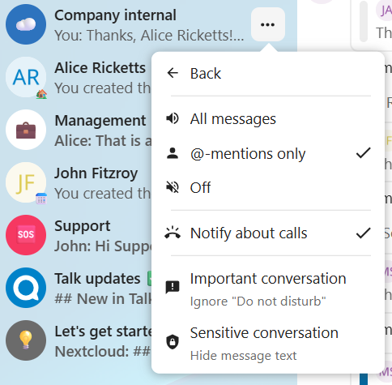
To have more control over your privacy, you can also configure the visibility of your typing and read indicators in Talk settings:
{kind=link}
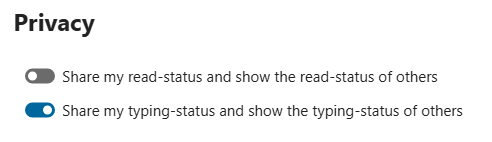
Matterbridge
L’intégration de Matterbridge dans Nextcloud Discussion permet de créer des “passerelles” entre les conversations Discussion et les conversations sur d’autres services de chat tels que MS Teams, Discord, Matrix ou autres. Vous trouverez la liste des protocoles supportés sur la page github de Matterbridge.
Un modérateur peut ajouter une connexion Matterbridge dans les paramètres d’une discussion.

Chaque passerelle a ses propres besoins en terme de configuration. La plupart des informations sont disponibles en anglais dans le wiki Matterbridge et sont accessible par le sous-menu more information du menu .... Vous pouvez aussi accéder directement au wiki.
Salle d’attente
La salle d’attente vous permet d’afficher un message d’accueil aux participants avant que l’appel ne démarre. Cette fonctionnalité est par exemple utile pour les webinaires avec des participants externes.
{kind=link}
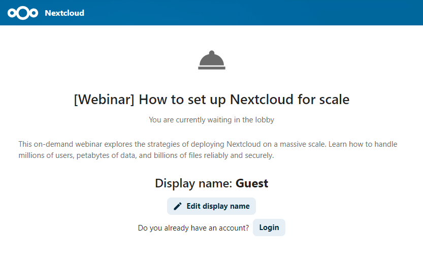
Vous pouvez choisir de laisser les participants rejoindre l’appel à un heure donnée ou quand vous fermez manuellement la salle d’attente.
Commandes
Nextcloud permet aux utilisateurs de réaliser des actions via des commandes. Une commande peut ressembler à :
/wiki avions
Les administrateurs peuvent configurer, activer et désactiver les commandes. les utilisateurs peuvent trouver les commandes disponibles avec la commande help.
/help

Retrouvez plus d’informations dans la documentation administrateur pour Discussion.
Discussion depuis Fichiers
Dans l’application Fichiers, vous pouvez discuter au sujet d’un fichier depuis la barre latérale, et même faire un appel tout en l’éditant. Pour cela, vous devez, en premier lieu, rejoindre le chat.


Vous pouvez alors discuter ou avoir un appel avec les autres participants, même en éditant le fichier.

Une conversation sera créée sur le fichier dans Discussion. Vous pouvez donc discuter depuis l’application ou revenir au fichier via le menu ... en haut à droite de la page.

Créer des tâches depuis une conversation ou partager des tâches dans une conversation
Si l’application Deck est installée, vous pouvez utiliser le menu … d’un message de discussion et transformer le message en tâche Desk.

{kind=link}
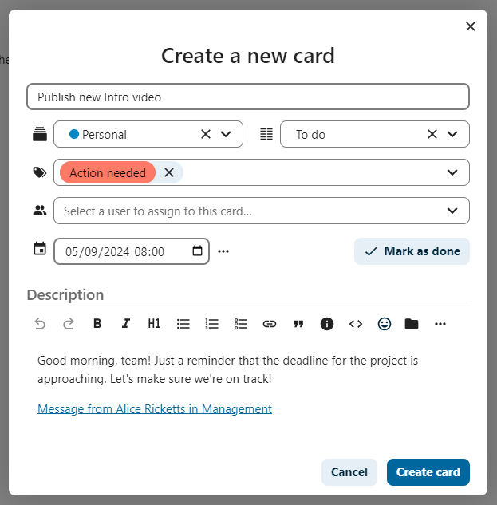
Depuis le Deck, vous pouvez partager des tâches dans une conversation.
{kind=link}
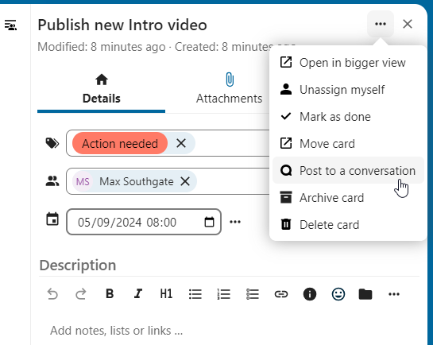

Meetings and events
If calendar events have a Talk conversation set as event location, you will see an information about upcoming events inside of this conversation. That way you can stay informed about scheduled meetings or activities directly within your chat. If Calendar app is enabled, you can click on an event to view details.
{kind=link}
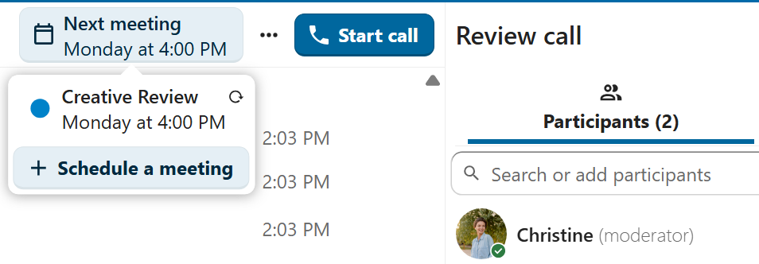
It is possible to schedule a meeting directly from a conversation. In the dialog, you can set meeting details such as title, date, time and description. You can also choose to invite all participants including email guests, or select specific ones.
{kind=link}
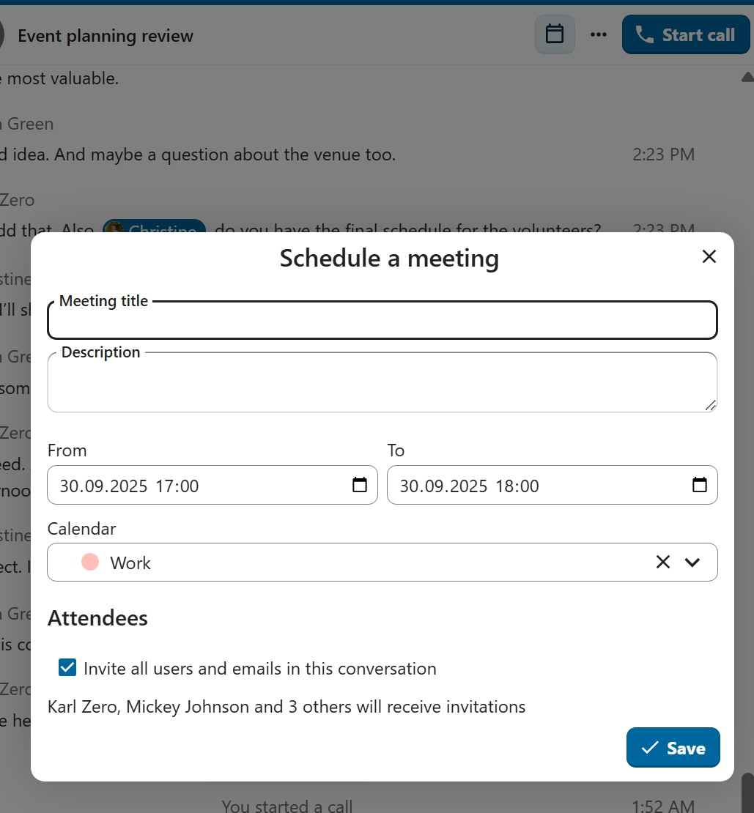
Schedule from Calendar
When creating a new event in Calendar, you can set a Talk conversation as event location. This will create a new conversation if one does not exist yet.

When the event is created, you will see a link to the conversation in the event details. Conversation will also show up in the list of conversations (discoverable by Events filter).
{kind=link}
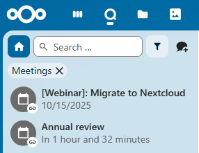
Like instant meetings, event conversations will be automatically deleted after configured period of inactivity (by default 28 days).
Salles de sous-groupes
Les salles de sous-groupes vous permettent de diviser un appel Nextcloud Talk en petits groupes pour des discussions plus ciblées. Le modérateur de l’appel peut créer plusieurs salles de réunion et affecter des participants à chacune d’entre elles.
Note
Breakout rooms are currently not available in conversations that are joinable by guests (public conversations).
Configurer les salles de sous-groupes
Pour créer des salles de réunion, vous devez être modérateur dans une conversation de groupe. Cliquez sur le menu de la barre supérieure et cliquez sur « Configurer des salles de réunion ».

Une boîte de dialogue s’ouvre dans laquelle vous pouvez spécifier le nombre de salles que vous souhaitez créer et la méthode d’affectation des participants. Trois options vous sont alors proposées:
Attribuer automatiquement les participants: Talk attribuera automatiquement les participants aux salles.
Attribuer manuellement des participants: vous passerez par un éditeur de participants où vous pourrez attribuer des participants à des salles.
Autoriser les participants à choisir: Les participants pourront rejoindre eux-mêmes les salles de sous-commission.

Gérer les salles de sous-groupes
Une fois les salles de réunion créées, vous pourrez les voir dans la barre latérale.

Depuis l’en-tête de la barre latérale
Démarrer et arrêter des salles de réunion: cela déplacera tous les utilisateurs de la conversation parent vers leurs salles de réunion respectives.
Diffuser un message dans toutes les salles: cela enverra un message à toutes les salles en même temps.
Apporter des modifications aux participants assignés: cela ouvrira l’éditeur de participants où vous pourrez modifier les participants assignés à telle ou telle salle de réunion. À partir de cette boîte de dialogue, il est également possible de supprimer les salles de réunion.
{kind=link}
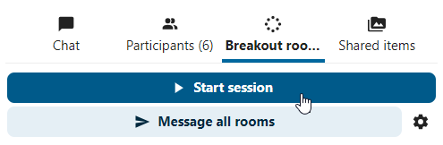
À partir de l’élément de salle de réunion dans la barre latérale, vous pouvez également rejoindre une salle de réunion particulière ou envoyer un message à une salle spécifique.

Call recording
The recording feature provides users with an opportunity to:
Start and stop recordings during a call.
Record the video and audio stream of the speaker, as well as screen share.
Access, share and download recorded files for future reference or distribution.
Enabling this feature requires the recording server to be set up by the system administration.
Manage a recording
The moderator of the conversation can start a recording together with a call start or anytime during a call:
Before the call: tick the checkbox « Start recording immediately with the call » in « Media settings », then click on « Start call ».
During the call: click on the top-bar menu, then click « Start recording ».


The recording will start shortly, and you will see a red indicator next to the call time. You can stop the recording at any time while the call is still ongoing by clicking on that indicator and selecting « Stop recording », or by using the same action in the top-bar menu. If you do not manually stop the recording, it will end automatically when the call ends.
{kind=link}
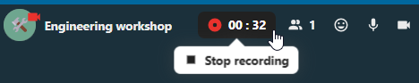
After stopping a recording, the server will take some time to prepare and save the recorded file. The moderator, who started the recording, receives a notification when the file is uploaded. From there, it can be shared in the chat.
{kind=link}
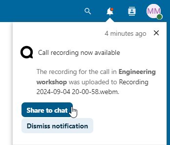

Recording consent
For compliance reasons with various privacy rights, it is possible to ask participants for consent to be recorded before joining the call. The system administration has the flexibility to utilize this feature in several ways:
Disable consent completely.
Enable mandatory consent system-wide, requiring consent for all conversations.
Allow moderators to configure this option on a conversation level. In such cases, moderators can access the conversation settings to configure this option accordingly:

If recording consent is enabled, every participant, including moderators, will see a highlighted section in the « Media settings » before joining a call. This section informs participants that the call may be recorded. To give explicit consent for recording, participants must check the box. If they do not give consent, they will not be allowed to join the call.

{kind=link}
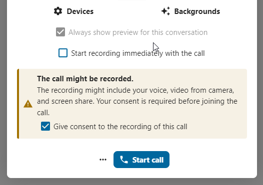
Federated conversation
With Federation feature, users can create conversations across different federated Talk instances and use Talk features as if they were on a same server.
Feature is required to be set up by the system administration.
Send and accept invites
The moderator of the conversation can send an invite to participant on a different server:

When receiving a notification, user will see a counter of pending invites above the conversations list.
{kind=link}
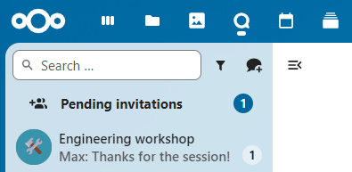
Upon clicking it, more information will be provided about inviting party, and user can either accept or decline the invitation.

By accepting the invite, conversation will appear in the list as any other one.
{kind=link}
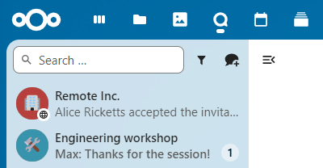
You can use it further to chat with participants from other federated servers, join calls and use other available Talk features.
Chat summary
When AI assistant is enabled, a summary can be generated if there are more than 100 unread messages. You can generate it by pressing the button that is visible in chat above the first unread messages.
{kind=link}
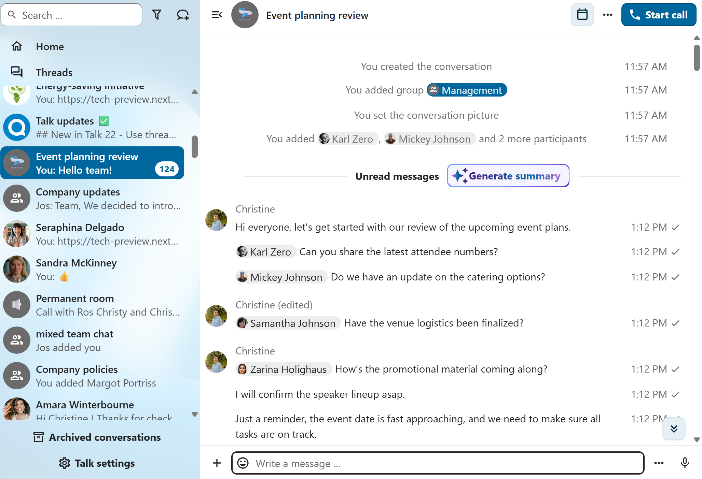